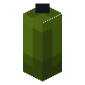

绿色蜡烛
Green Candle
所属标签
获取方式
方块掉落 (8)
- Yucca Gateau with Green Candle
- 插上绿色蜡烛的蛋糕
- 带绿色蜡烛的红豆蛋糕
- 带绿色蜡烛的香蕉蛋糕
- 带绿色蜡烛的巧克力蛋糕
- 带绿色蜡烛的薄荷蛋糕
- 带绿色蜡烛的草莓蛋糕
- 带绿色蜡烛的香草蛋糕
其他来源 (1)
minecraft:archaeology/trail_ruins_common
纯原版配方（合成、烧炼等）不在本图鉴收录范围，以下仅列出模组与 CraftTweaker 相关配方。
模组配方 · 用于 (2)
有序合成The Block Box


原始 JSON
{
"type": "minecraft:crafting_shaped",
"category": "misc",
"key": {
"/": {
"item": "minecraft:string"
},
"c": {
"tag": "minecraft:candles"
},
"p": {
"item": "minecraft:paper"
}
},
"pattern": [
"ppp",
"p p",
"/c/"
],
"result": {
"count": 1,
"id": "blockbox:white_sky_lantern"
}
}有序合成Supplementaries


原始 JSON
{
"fabric:load_conditions": [
{
"condition": "supplementaries:flag",
"flag": "candle_holder"
}
],
"neoforge:conditions": [
{
"type": "supplementaries:flag",
"flag": "candle_holder"
}
],
"type": "minecraft:crafting_shaped",
"category": "building",
"group": "candle_holder",
"pattern": [
" C ",
" N "
],
"key": {
"C": {
"item": "minecraft:green_candle"
},
"N": {
"tag": "c:ingots/iron"
}
},
"result": {
"id": "supplementaries:candle_holder_green",
"count": 1
}
}